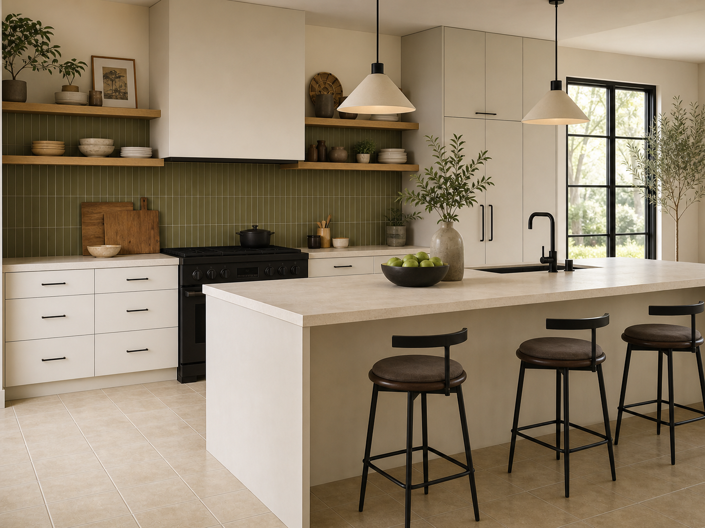

Kitchen 01Warm white plus olive vertical tile
Flat warm-white fronts quiet the floor while olive, oak, black hardware, and bronze lighting make the beige grid feel current.
Keep: low-contrast beige grout. Add: matte hardware, warm daylight, clear counters.